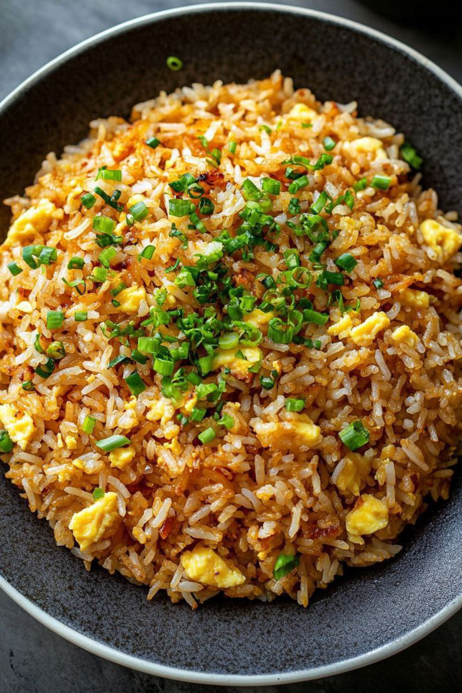

Solo Living Toolkit
Master the art of independence
We can enjoy life on our own by cooking for ourselves.Here I want to share some easy and cozy meals for singles😉.
Quick & Easy
- Egg fried Rice
- Vegetable fried Rice
- Stir-fry noodles
Comfort Food
- Creamy Garlic Mushroom Toast
- Cozy Ramen
- Single-serve Shakshuka
Drinks
- Mocktail
- Iced coffee or tea
- Herbal Tea
.jpg)
Desserts
- Fruit & Yogurt Parfait
- Egg pudding
- Chocolate Mug cake
.jpg)
Egg fried rice recipe
- 3 tablespoons (45 ml) vegetable or other neutral oil
- 3 large eggs, thoroughly beaten
- 1 1/2 to 2 cups (about 1 pound/450 g) cooked rice (see note)
- 2 teaspoons (10 ml) light soy sauce
- 3 scallions, thinly sliced crosswise
Direction
- Preheat a wok over high heat until lightly smoking. Add 1 tablespoon oil and swirl to coat.Add eggs to center of wok and cook, swirling wok until eggs are puffy and lightly browned on the bottom.Flip eggs and lightly brown on second side. Push eggs up to the side of the wok.
- Add another tablespoon of oil to the wok and swirl to coat. Add rice to center of wok. Flip eggs on top of rice, then using a wok spatula, break the rice and eggs up, tossing and stirring as you break them. Stir-fry until rice starts to pop and jump on its own
- Add remaining tablespoon of oil around the rim of the wok, then add the soy sauce to the same spot. Stir-fry until rice and eggs are evenly coated in the soy sauce (the rice should be more or less broken up into distinct grains without any large clumps). Add scallions. Remove from heat and toss to combine. Transfer to a serving platter and serve immediately. 
The Experience of Living Alone
Living alone is becoming increasingly common in modern societies. Whether by choice or necessity, many people choose to live independently at different stages of life.
This comes with unique experiences, responsibilities, and challenges. Some find it freeing, while others might feel lonely at times.
Despite some diffficulties, living alone offers a chance for personal growth and self-discovery. It allows people to learn more about themselves in a private space.
In this article, we will explore the benefits of living alone, how it compares with shared living, and what you can expect if you decide to take this path.
Benefits of Living Alone
- Personal freedom and independence
- Better focus and productivity
- Full control over the living environment
- Opportunity for self-reflection and growth
- No conflicts over household chores or habits
Living Alone VS Living with Others
| Aspect | Living Alone | Living with Others |
|---|---|---|
| Privacy | High | Low |
| Cost | Usually Higher | Shared and Lower |
| Decision-Making | Independent | Collaborative |
| Social Interaction | Less Frequent | More Frequent |
Living alone can be a rewarding experience if approached with the right mindset. It offers freedom, independence, and opportunities for personal development. However, it also requires responsibility and self-discipline.
Whether you choose to live alone or with others, understanding your needs and preferences is key to creating a happy living environment. ✨
Our Beloved Pets
If you're single and feeling lonely, you should consider getting these adorable pets!

Why should you consider having a pet?
- Companionship: Pets can provide excellent companionship and reduce feelings of loneliness. Their affection and presence can be very comforting.
- Health Benefits: Spending time with pets can reduce stress, anxiety, and symptoms of depression. Petting or playing with them can release hormones that make you feel happier.
- Increased Physical Activity: If you have a dog, you'll likely go for walks or play outdoors more often, which increases your physical activity.
- Sense of Responsibility: Caring for a pet teaches responsibility. Feeding them, giving them water, and cleaning up after them helps develop a sense of duty.
- Social Opportunities: Pet owners often have more opportunities to socialize with other people, whether at dog parks or during walks.
How you choose a pet that fits your lifestyle?
-
Your Activity Level: Are you active and outdoorsy, or do you prefer a more
relaxed indoor lifestyle?
High-energy pets like some dog breeds might be a great fit for active individuals, while calmer pets
like cats or smaller animals might be better for those with a quieter lifestyle. -
Your Living Situation: Do you live in a small apartment or a large house with
a yard?
The size of your home can influence the type and size of pet that would be comfortable. -
Time Commitment: How much time can you dedicate to caring for a pet each
day?
Some pets require more attention, training, and exercise than others. - Budget: Consider the ongoing costs of pet ownership, including food, vet care, grooming, and supplies.
-
Allergies: If you or someone in your household has allergies, you might need
to consider hypoallergenic
breeds or other types of pets.
Categories
- Dogs: Known for their loyalty and companionship. They often require training, exercise, and social interaction.
- Cats: Often independent but can be very affectionate. They typically need less direct attention than dogs but still need play and care.
- Birds: Can be intelligent and some can even learn to talk. Their care varies greatly depending on the species, often requiring specific cages and social interaction.
- Fish: Relatively low-maintenance visually appealing pets. They require a suitable tank environment and proper feeding.
- Small Mammals (e.g., Hamsters, Guinea Pigs, Rabbits): These can be fun pets, each with their own needs. Hamsters are often nocturnal, guinea pigs are social, and rabbits need space to hop.
Relationship between animals and human
- Companionship: Many animals, especially pets like dogs and cats, provide companionship, reducing loneliness and offering emotional support.
- Mutual Benefit: Historically and currently, animals provide services (e.g., herding, protection, assistance), while humans offer care, food, and shelter.
- Emotional Bonds: Humans often form strong emotional attachments to animals, viewing them as family members and experiencing joy and comfort in their presence.
- Learning and Understanding: Studying animals helps humans understand biology, behavior, and the natural world, contributing to scientific knowledge.
- Ethical Considerations: The relationship also involves ethical responsibilities for humans regarding animal welfare, conservation, and respectful treatment.
Behaviors of Animals
- Communication: Animals use various signals like vocalizations, body language, and scents to communicate with each other and sometimes with humans.
- Social Behavior: Many animals exhibit social structures, living in groups with hierarchies, cooperation, and competition.
- Instinct and Learning: Behavior is a mix of innate instincts (e.g., migration) and learned responses from experience and interaction.
- Adaptation: Animal behaviors often evolve to help them survive and reproduce in their specific environments (e.g., camouflage, foraging techniques).
- Individual Variation: Even within the same species, individual animals can show unique behavioral traits and personalities.
Solo Life Vlog Content Recommendations
Personal life
- Days in my life
- My daily habits
- My morning to night routine
- The miracle of my life
Travelling
- Solo travelling
- Solo travel tips and hacks
Self-improvement
- Goal setting and planning
- Time management tips
- Self-care routine
In self-care vlog, we can make about
- Mind and emotions
- Body and health
- Soul and joy
Opinion and advice
- How I deal with negativity
- Shining solo
Creative
- 10 Days challange results
- Trying a new routine
- No talking aesthetic vlogs
Single is not a status.It's a word that describes a person,who is strong enough to live and enjoy life without depending on others.
Solo vlogging can be incredibly enpowering.It builds confidence,problem-solving skills and resilience.So,here are some tips how to make a simple single life vlog.